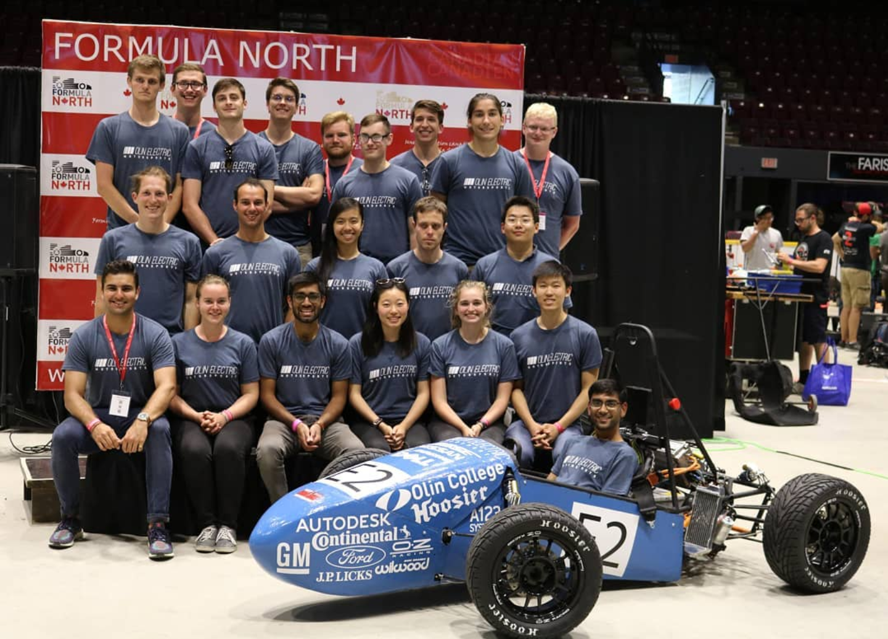
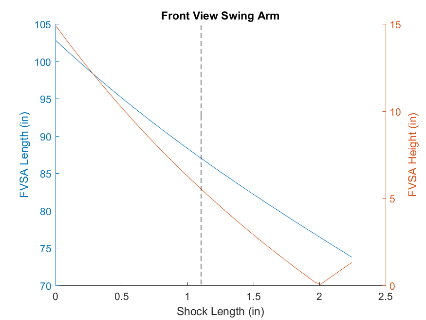
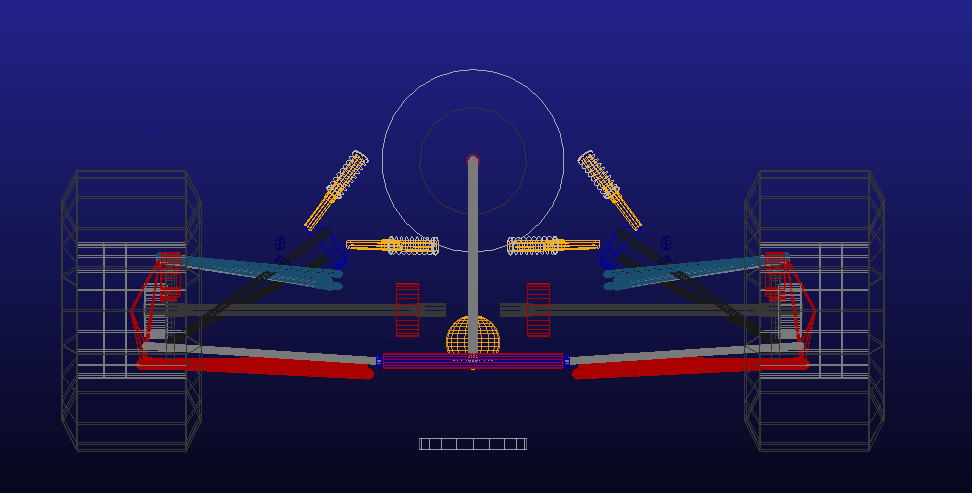
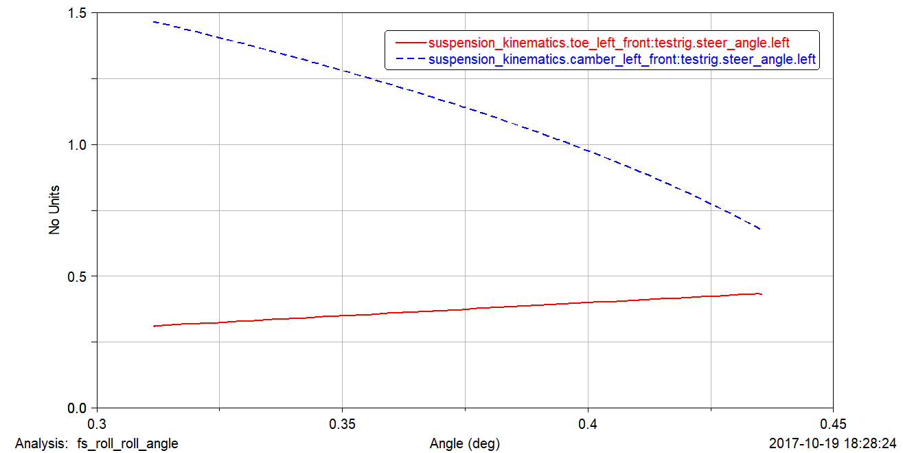
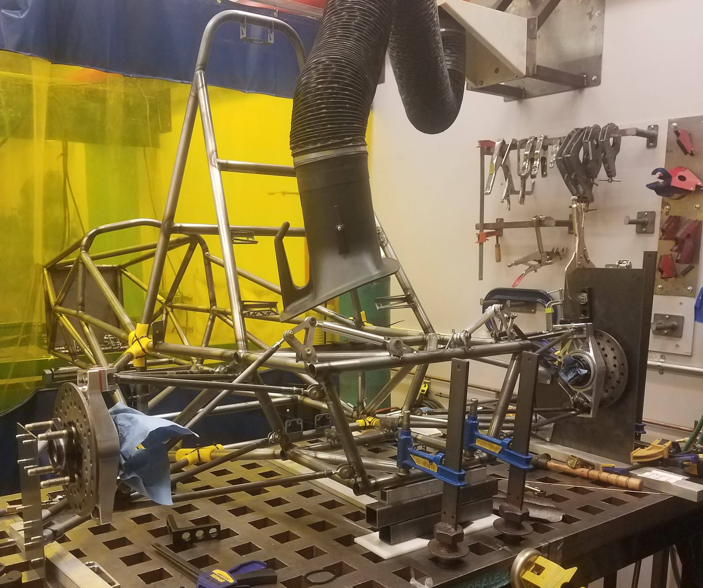

Vehicle Dynamics
I've joined Olin Electric Motorsports on my first week at Olin, without knowing anything about vehicle design or Formula Electric. By the end of my second year in the team I had designed the entire rear suspension geometry of Mk.III, the third FSAE Electric car our team had made. This year, I'm working on designing an improved suspension geometry and chassis for Mk. IV.
OEM Team 2017-2018 with Mk.III at Formula North
Rear Suspension Geometry of Mk. III
Designing the suspension geometry was a new endeavour for our team. There were no designated subteams for the suspension geometry for Mk. I and Mk. II, and because of that there was not a lot of accumulated knowledge in the team about suspension geometry. Therefore, Mk. III was a learning opportunity for me and my only other teammate who focused on suspension geometry.
A finalized Solidworks model of Mk.III's rear suspension geometry.
The majority of our design cycle consisted of doing research, mostly through reading resources like "Race Car Vehicle Dynamics" by Milliken & Milliken". Only after having a good understanding of the main concepts - such as ride freqeuncies and roll centers - did we start designing the suspension.
A MATLAB plot of our FVSA position analysis. We analyzed instant center migration to reduce roll center migration as the wheel travels.
We made a design study in Solidworks, so that we could simulate the suspension movement as we changed the wheel and shock travels and record the hardpoints. We wrote a MATLAB script that took in the hardpoint coordinates and calculated important parameters, such as roll center locations and the motion ratios of the rocker design.
The Adams Car setup of Mk.III. We used Adams Car to do a more thorough analysis of the suspension geometry, by testing it through different cases, such as acceleration, constant radius turn and pure roll.
Finally, we used Adams Car to validate our MATLAB models and do further analysis on our suspension geometry that we couldn't easily do with MATLAB. Adams Car is a vehicle dynamics simulation software that enabled us to import our suspension by entering in the suspension hardpoint coordinates around run certain tests on it, such as acceleration, roll or constant radius turn.
The toe and camber change in our front suspension with degrees of roll.
Welding Jig for Mk. III's Suspension Tabs
What is as important as designing a suspension geometry, well suited for your goals and interests, is to be able to manufacture it. We get our chassis welded by a professional company, however, we weld our own control arms and tabs to the chassis. The accuracy of our analysis and motion studies are entirely reliant on the accuracy of our manufacture to our design. Therefore, we decided to build a jig that fully constrained our suspension tabs to their ideal locations.
Solidworks CAD of the jig for the front suspension. All yellow parts were printed with a 3D printer out of PLA.
In order to weld the suspension tabs accurately to the positions and orientations we had designed them in, I designed a reference plate that would be clamped to the wheel plate to locate the outboard system. This wheel plate was on the wheel center plane and held all of our outboard system - knuckle, hub, and the control arms - and if accurately located with respect to the chassis would allow us to weld the suspension tabs accurately.
Using Solidworks' Surfaces toolbox, I designed 3D printed brackets (in yellow in the CAD above and the photos below) that are snap fits to the chassis and house tubes that connect to similar brackets on the reference plate. Once we set the caster and camber angles with a digital protractor and measured the toe between the two wheel plates all the tabs found their positions on the chassis.

The welding jig assembled. Though the 3D printed brackets were snap fits, they were secured with zip-ties to prevent flexure.
Although this jig worked pretty reliably and allowed us to weld our tabs, it had its downsides. First of all, it relied on 3D printed fixtures, which have some play to them that introduces an overall error to the system. We were able to mitigate this problem, by doing measurements with respect to known points on the chassis, however it made the tacking procedure very long. Moreover, the two plate system required the use of multiple clamps, which also increased jigging time.
Another fundamental fault of this jigging procedure was the fact that it referenced the chassis. This makes our jigging procedure vulnerable to inaccuracies between the CAD and the welded frame that we receive. Even though the frame is usually very accurate to the design we send out, there were discrepancies between our design and the frame in the past. Therefore for Mk.IV, we are working on a jig that is based on a universal reference frame that the chassis will be fixed to.
Rear suspension tabs fully tacked.
- Design: HTML5 UP